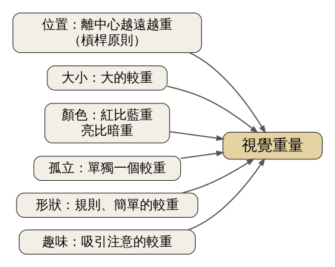
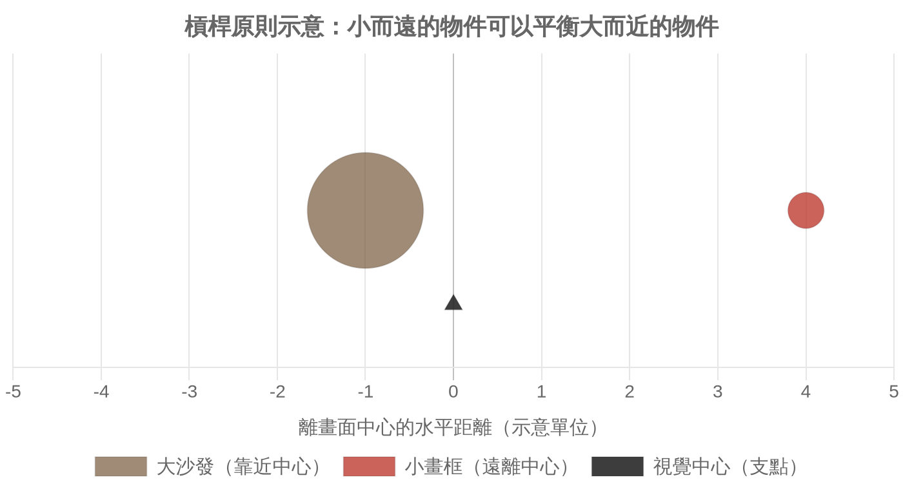
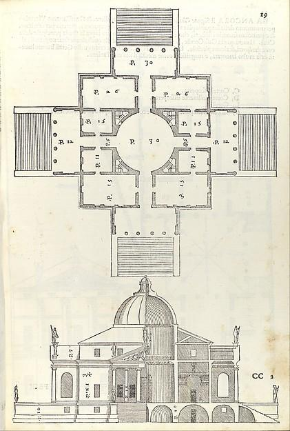
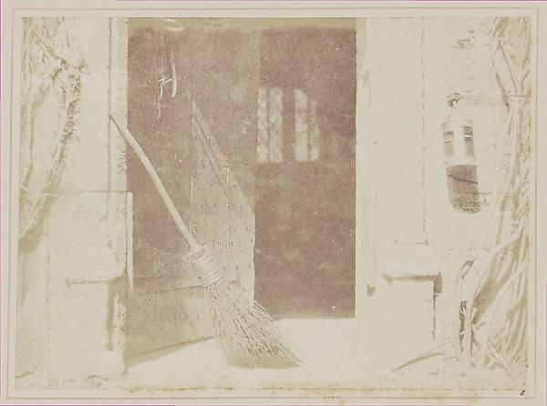

畫面和房間裡的每樣東西都有「看起來的重量」，它取決於位置、大小、顏色、孤立程度與形狀；Arnheim 主張，這些重量在中心兩側互相抵銷時，我們就覺得平衡。今天學會用這幾個因素判斷一個空間為什麼看起來「歪」或「穩」，再用一件小東西把它扶正。
史料 1844 年，William Henry Fox Talbot 出版了攝影史上最早的攝影圖冊之一《The Pencil of Nature》。第六張圖叫〈The Open Door〉：一扇半開的木門，門邊斜靠著一把掃帚，右上方的牆上掛著一盞提燈（見圖 4）。Talbot 在圖旁的說明裡自稱這是攝影「嬰兒期」的小嘗試，並且拿荷蘭繪畫替這種日常題材辯護：畫家的眼睛常停在一般人看不出有什麼特別的地方。
這張照片的主角只是一把掃帚，畫面卻不顯得空洞或傾斜。掃帚從左下斜向中央，深色的門洞占據畫面中右，提燈小小一個掛在最右邊。把提燈用手指遮住再看一次，右半邊會突然變輕。這一盞燈到底「重」在哪裡？一百多年後，一位心理學家替這種感覺寫了一整章。
經典理論 Rudolf Arnheim 是受格式塔心理學訓練的德裔美國學者。他在《Art and Visual Perception: A Psychology of the Creative Eye》（University of California Press，1954 年初版，1974 年出修訂擴充版）第一章談的就是「平衡」。他主張，一個矩形畫框裡存在看不見的「結構骨架」：中心的吸力最強，其次是四角、中軸線與對角線。放進畫框的每個元素都會被這些力拉扯，元素彼此也會互相拉扯。當所有力量互相抵銷，畫面看起來就是平衡的；一個圓點只要稍微偏離中心，就會顯得「想要移動」。（依二手文獻：Hübner & Fillinger 2016 對 Arnheim 理論的整理）
經典理論 Arnheim 把這種力量稱為視覺「重量」，並列出影響重量的因素（見圖 1）：
這份清單的後三項，本課程是依二手文獻（Hübner & Fillinger 2016，以及 Leymarie 依原書整理的讀書筆記）轉述，沒有查到原書頁碼。Arnheim 自己也說過，這些因素大多還有待驗證。

圖 1｜Arnheim 列出的視覺重量因素。來源：本課程依 Arnheim《Art and Visual Perception》（1954／1974）第一章，及 Hübner & Fillinger（2016）的整理繪製。授權：本課程自製圖解。
實證研究 心理學家後來真的拿這套說法做實驗，結果有一半對、一半不對。I. C. McManus、D. Edmondson 與 J. Rodger 在 1985 年發表〈Balance in pictures〉（British Journal of Psychology 76 卷）。他們請受試者在一幅畫下方移動支點，移到覺得畫面左右平衡為止。結果是元素的「位置」強烈影響支點落在哪裡，大小與顏色的影響小得多；受試者也沒有像槓桿公式那樣，把距離和大小正確地相乘。作者的結論是，平衡感比較像對整張畫的整體判斷，不太依賴某一個元素。他們還發現，許多藝術作品的支點並不落在正中央，名作不一定「平衡」。（依二手文獻：Hübner & Fillinger 2016 的文獻回顧）
實證研究 Paul Locher、Pieter Jan Stappers 與 Kees Overbeeke 在 1998 年的研究（Acta Psychologica 99 卷）換了一個方向：請成年人用圓形、方形、長方形或樹葉，在方形底板上自由排出一個設計，全程錄影。不論用哪種素材、排到哪個階段，作品整體的重心都緊貼著底板的幾何中心。人們在動手排東西時，好像會自動以中心為錨。
實證研究 Ronald Hübner 與 Martin G. Fillinger 在 2016 年（Frontiers in Psychology）比較了幾種計算平衡的公式，發現依 Arnheim 槓桿想法算出的「重心偏離中心程度」，最能預測受試者打的平衡分數；但人們「喜不喜歡」一張圖，跟畫面是否均勻的關係，和跟平衡的關係差不多強。平衡感可以測量，不過平衡和好看是兩件事。

圖 2｜槓桿原則示意：靠近中心的大物件，可以被遠離中心的小物件抵住。示意，非實測數據。來源：本課程依 Arnheim《Art and Visual Perception》（1954）的槓桿原則繪製。授權：本課程自製圖解。
史料 最直接的平衡是對稱。Andrea Palladio 在 1570 年出版的《I quattro libri dell'architettura》第二書第三章，收錄了他為維琴察近郊設計的 Villa Almerico，也就是後來通稱的 La Rotonda（見圖 3）。平面圖是一個正方形套著中央的圓廳，四面各伸出一座一模一樣的門廊與階梯。Palladio 在書中解釋了四面門廊的理由：這塊基地位在小丘上，四周都有景可看，近的、遠的、一直延伸到地平線的都有，所以每一面都做了門廊。
用 Arnheim 的話來說，這棟房子把所有重量都放在結構骨架上最強的位置：中心一個圓廳，四條中軸各一座門廊。左右、上下沒有任何一邊比另一邊重，所以它看起來非常穩，也非常靜。Arnheim 的理論能解釋這種穩定，但也提醒一件事：完全對稱的平衡沒有「想要移動」的力量，畫面不會催你的眼睛往哪裡走。

圖 3｜Villa Almerico（La Rotonda）的平面與剖立面，四面門廊完全相同。來源：Andrea Palladio，《I quattro libri dell'architettura》第二書第 19 頁，1570 年，木刻版畫。授權：Public domain（The Metropolitan Museum of Art Open Access），來源頁面
本課程分析 大多數人的客廳不是 La Rotonda。假設你的客廳牆前，一張深咖啡色的三人沙發放在偏左的位置，因為右邊要留走道給陽台門。坐在對面看過去，整面牆向左沉。這時候有幾個方法，各自對應 Arnheim 的一個因素：
McManus 的實驗提醒我們，位置的效果最可靠，顏色和大小的效果比 Arnheim 說得弱。所以實際調整時，先移動東西的位置，再考慮換顏色。Locher 的研究則說明，你多半不需要量尺，眼睛會自己找中心；擺完之後退後三步看一眼，比計算有用。
本課程分析 回到 Talbot 的〈The Open Door〉（見圖 4）。畫面中央偏右是整片深色的門洞，面積最大，也最暗。左邊有掃帚，它的斜線從左下一路伸向中央，形狀細長、紋理細密，屬於 Arnheim 說的「內在趣味」。提燈很小，卻掛在最右邊的白牆上：位置離中心遠，周圍是一大片空白，正好符合「位置」與「孤立」兩個因素。三樣東西分在中心兩側，誰也沒有壓倒誰。
這張照片並不對稱，卻是平衡的。攝影師拍照時通常不能搬動景物，只能移動腳步和鏡頭，所以攝影裡的平衡大多靠取景位置決定：往左走一步，提燈就可能被切出畫面，右邊立刻變輕。這和你在客廳裡移動畫框的效果相同，只是攝影師移動的是取景框，你移動的是東西。

圖 4｜〈The Open Door〉，掃帚、門洞與提燈分在中心兩側。來源：William Henry Fox Talbot，〈The Open Door〉，1844 年 5 月以前，鹽紙印相，收於《The Pencil of Nature》圖版 VI。授權：Public domain（The Metropolitan Museum of Art Open Access），來源頁面
誤解一：平衡就是對稱。La Rotonda 是對稱的平衡，〈The Open Door〉是不對稱的平衡。Arnheim 的重量清單，主要就是在說明不對稱的東西如何也能平衡。
誤解二：視覺重量可以像物理一樣精確計算。槓桿原則是 Arnheim 的比喻與主張，McManus 等人 1985 年的實驗顯示，人們並沒有把距離和大小正確相乘。Hübner & Fillinger 整理後續研究時也指出，有研究者認為 Arnheim 的用詞只能當比喻理解。
誤解三：好作品一定平衡。McManus 等人量測藝術複製品時，發現支點位置差異很大，許多作品並不平衡。Hübner & Fillinger 2016 也發現，喜好和平衡只有部分相關。刻意的不平衡，可以用來製造不安或動感，這是下一堂「張力與方向」要談的事。
誤解四：紅色一定比藍色重。這是 Arnheim 的觀察，並非定律。在實驗裡，顏色對平衡判斷的影響比位置小，而且會被亮度、面積和背景改變。
看（5 分鐘） 坐在家裡最常坐的位置，看正對面的那面牆或那個櫃子。不要想「好不好看」，只回答一個問題：如果這面牆是一張翹翹板，它往哪一邊沉？找出讓它沉下去的那一樣東西，說出是哪個因素讓它重：位置、大小、顏色、孤立、形狀，還是趣味。
做（10 分鐘）
回顧（5 分鐘）
來源 | 類型 | 查核日期 |
Arnheim, R. Art and Visual Perception: A Psychology of the Creative Eye. University of California Press, 1954；修訂擴充版 1974。出版資訊：UC Press 書目頁 | 經典理論（原書未取得，內容依二手文獻） | 2026-11-07 |
Hübner, R., & Fillinger, M. G. (2016). Comparison of Objective Measures for Predicting Perceptual Balance and Visual Aesthetic Preference. Frontiers in Psychology, 7, 335. 全文 | 實證研究；並作為 Arnheim 與 McManus 1985 的二手文獻 | 2026-11-07 |
McManus, I. C., Edmondson, D., & Rodger, J. (1985). Balance in pictures. British Journal of Psychology, 76(3), 311–324. DOI（書目以 Crossref 查核） | 實證研究（依二手文獻） | 2026-11-07 |
Locher, P., Stappers, P. J., & Overbeeke, K. (1998). The role of balance as an organizing design principle underlying adults' compositional strategies for creating visual displays. Acta Psychologica, 99(2), 141–161. DOI（書目以 Crossref 查核） | 實證研究（依摘要，依二手文獻） | 2026-11-07 |
Leymarie 依 Arnheim 原書整理的讀書筆記（Scribd）。頁面 | 二手文獻（孤立、形狀、趣味等因素） | 2026-11-07 |
Talbot, W. H. F. The Pencil of Nature. London: Longman, Brown, Green & Longmans, 1844. Project Gutenberg 全文 | 史料 | 2026-11-07 |
Palladio, A. I quattro libri dell'architettura, 1570，第二書第三章 La Rotonda 的說明。1570 年版書頁（網站附英譯為 AI 翻譯，本課程僅取其大意） | 史料 | 2026-11-07 |
圖 3：The Met，Villa Almerico (Villa Rotunda), Book 2, page 19，Public domain（以 Met Open Access API 查核）。典藏頁 | 圖片授權 | 2026-11-07 |
圖 4：The Met，Talbot, The Open Door，Public domain（以 Met Open Access API 查核）。典藏頁 | 圖片授權 | 2026-11-07 |
延伸閱讀：Arnheim 原書第一章〈Balance〉；下一堂（第 012 堂）將接著談同一本書裡的「張力與方向」。